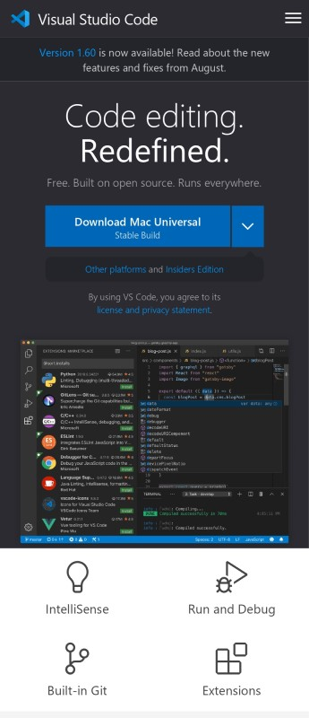
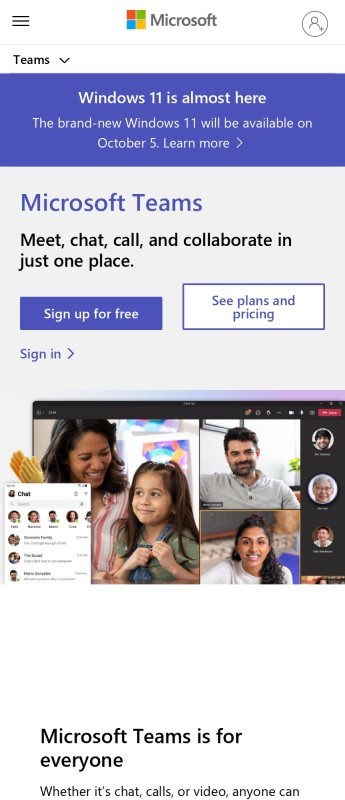

Visual Hierarchy
VS Code VS Code's homepage uses visual hierarchy to direct its audience. The heading of "Code editing. Redefined." is most prominent, with the download button highlighted below it. There is also only a single download button shown, instead of all download options, which is a good example of Hick's law. The reader then looks to the top and sees the newest version of the software, and below the download button, a screenshot of the application. Other features are emphasized lower down, such as Intellisense and Extensions.
White Space and Clean Design
Microsoft Teams The Teams homepage has a very bright, clean, open design. It is very minimal with a short header, two buttons, and an image. There is also a notification banner at the top of the page. In this top section of the page, there are no large blocks of text. There is a large whitespace before the next section where the longer text begins. The space is very well used on the page, and it gives a good first impression to the reader of the simplicity of the software.
Contrast
GitHubThe GitHub homepage has a great level of contrast with a white heading on top of a dark background image. Below it is a faded subtext that, because of it's low contrast, will likely be read last. Instead, readers' eyes will be drawn to the email input box. The green button also stands out well and is a good call-to-action button. Contrast is used to separate the header from the main content of the page. On a side note, for mobile screens the email input and sign-up button are in a very accessible position.